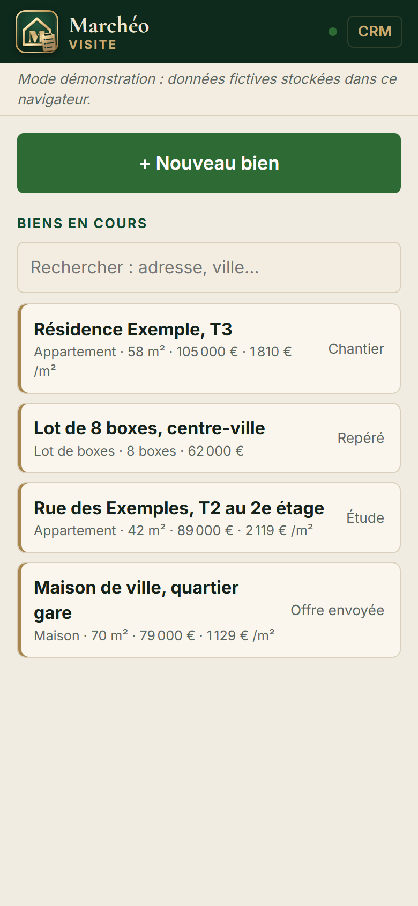

3 · Finition carrosserie
Le vert métallisé dans le CRM
Base vert profond, reflet clair en diagonale, paillettes fines visibles de près. La finition reste sur les surfaces « tôle » : barre latérale, en-têtes mobiles, boutons principaux, pastilles actives. Les cartes et tableaux restent ivoire mat pour que les chiffres se lisent. Au survol, un reflet balaie le bouton.


À l'impression, une encre ne brille pas : le dégradé seul donne l'effet. Pour un vrai rendu métal sur un support imprimé, demander à l'imprimeur un vernis sélectif sur le reflet ou une dorure à chaud laiton sur le logo.